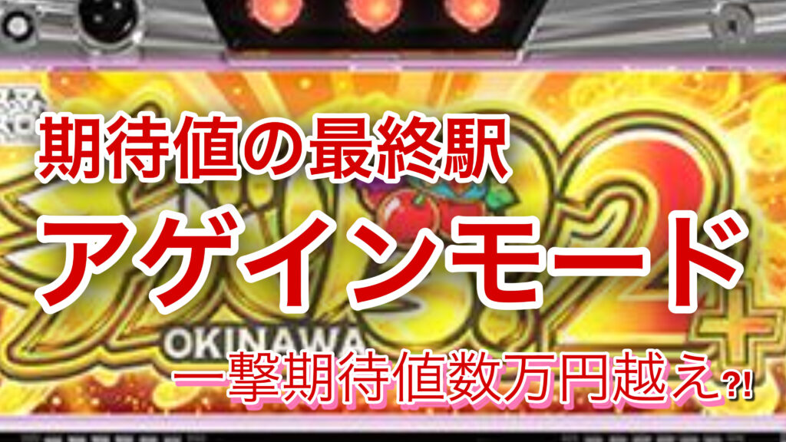

【期待値数万円越】アゲインモード突入契機考察とその狙い方
注意

チバリヨ2プラスは設置店舗が少なく、
さらに今回のアゲインモード狙いは、
その中でもごく一部の限られた条件を満たした時だけ成立する超限定的な狙い方。
その結果──
この記事で紹介するような履歴は約600万Gのデータからサンプルを抽出したが参考になるデータが少なかった。
また実践したサンプルは6件。
だがその6件、
すべてが「10チェ以内で天国→虹パト」に突入がみられ、アゲインモード濃厚とみられる。
アゲインモード自体が激アツのため──
片道2時間かけてでも“拾いに行く価値がある”。
※これは解析記事ではなく考察と実戦に基づいたコラム
この日の狙いのすべてを実践データと共に公開。
チバリヨ2プラス「アゲインモード」
チバリヨ2プラスには、未だに正体不明の“激アツモード”が存在する。
その名も アゲインモード。
このモード、なんと突入時点で「10チェ以内の当選が確定」
さらに、次回は虹パト濃厚?!という、ヤバすぎる仕様。

…にもかかわらず、
ネット上には情報がほとんど出回っていない。
解析もない。突入タイミングも天国モード終了の一部とだけ、狙い方もわからない。
激アツ確定モードのはずなのに、誰も狙えていない。
もしこのアゲインモードを見抜ける“兆し”があったとしたら？
もし次回虹パトが確信に変わる“挙動”があるとしたら？
それを知っているかどうかで、立ち回りが変わる。
今回のnoteは「アゲインモード」の謎に迫っていく。
アゲインモードの“存在”を疑った挙動
いつものようにリセ狙いしてたら朝イチの初当たりで、いきなりの虹パトフリーズ。
これが5連で終了。
…ここまではよくある話。
だが違和感があった。
虹パトを経由したにも関わらず、有利区間が切れていない。
差枚はそこそこあったため、そのまま様子見で続行。
すると、10チェリー以内で当選し、いきなり天国へ。
しかもその天国中に、すぐ虹パト告知が出現。
――この挙動、何かおかしい。
直感的に「これが“アゲインモード”じゃないか？」と思い、
すぐにスロ塾内Discordでこの挙動を共有。


すると、同じような報告が届いた。
- 虹パト当選 → 天国終了 → 有利継続 → 10チェ以内当選 → 再び虹パト
この一連の挙動、
“虹パト後の一部でアゲインモードが仕込まれている”としか思えない。
謎とされていたアゲインモードのタイミング、
それは「虹パト→有利継続→10チェ当選」の流れの中にある。
そう確信し、
実戦サンプルとデータ収集に踏み切った――。
※切断はボーナス後筐体外枠が32Gでふわふわ消灯するかどうかで判断してください。通常は32Gでふわふわが消灯します。有利切断時は1,2Gズレて33Gもしくは34Gに消灯します。ただしどちらもチェリー引いた際はデータカウンターに反映されないが消灯は１G短縮です。
例：チェリー2回引いた場合、通常はデータカウンター30Gでふわふわ消灯。切断時は31Gでふわふわ消灯
 ①推定(仮)虹パト条件(約600万Gデータ)
①推定(仮)虹パト条件(約600万Gデータ)
各ループ毎のボーナス比率(プラスの解析がないため無印のデータを参照)

以下の条件を満たす台を“虹パト後有利継続”とみなして600万Gのデータからフィルター：
- 5連チャン以上
- 金7（ボナ獲得枚数280枚以上）割合が高い
- 総連数の半数以上が金7
- または最後の6連中、半数以上が金7
- 当日差枚が＋1500枚以上 or 18連以上の台は除外（有利切れの可能性高いため）
 ②推定(仮)虹パト後データ（サンプル20例）
②推定(仮)虹パト後データ（サンプル20例）
▷ 天国移行率
- 13/20（65%）
- 天国移行台は全て仮天までに当選（最大315G）
▷ 差枚別の天国移行率
- マイナス差枚 → 9/10
- プラス差枚 → 4/10
▷ 天国後のループ率
- 2/4（50%）
- ※残り9台は有利切れ or 初当たり取れていないため除外
 ③サンプル抜粋
③サンプル抜粋
・天国移行した13例 差枚プラス○マイナス△
○10連金7 5回
△14連金7 5回(最後6回中3回金7)
○5連金7 3回
△6連金7 5回
○15連金7 7回
○6連金7 3回
△11連金7 7回
△14連金7 4回(最後6回中3回金7)
△14連金7 4回(最後6回中4回金7)
△8連金7 4回
△13連金7 6回
△17連金7 4回(最後6回中4回金7)
△6連金7 4回
・天国移行しなかった7例
○6連金7 3回
○7連金7 4回
○10連金7 3回(最後6回中3回金7)
○5連金7 3回
○13連金7 6回
○7連金7 4回
△5連金7 3回 ④考察
④考察
- チバリヨ２無印には無い挙動＝アゲインモードはプラス特有挙動
- 虹パト落ち→有利継続時、アゲインモードの突入率がかなり高い
- 金7比率が高い(金7比率4/9や5/12)でも虹パトっぽい挙動 → その後10チェまで打つ価値は十分ある。
- 特に据え置き店舗（差枚でリセットされないため）は狙いやすい
 ⑤立ち回りポイント（狙い目）
⑤立ち回りポイント（狙い目）
各ループ毎のボーナス比率(プラスの解析がないため無印のデータを参照)

以下の台は“アゲインモード狙い”で10チェまで回す価値あり：
- 虹パト確定後天国終了時に有利継続→アゲインモード濃厚
- または以下の条件：
- 9連以上 × 金7比率40%以上
- 5連以上 × 金7比率50%以上
- 最後6回中 金7が3回以上
- 上記のような履歴で
→ 10チェまたは仮天（最大360G）まで打つ！
 ⑥補足メモ
⑥補足メモ
- 有利切れ台＝リミットレス後で強力（天国移行率約50%？）
- 有利切れ目安：
- 差枚＋1600枚前後〜
- 1万枚以上の凹みで17連で切断してないケースあり。
- 実践時虹パトが9連で終了し有利区間継続を確認。
- 実践時虹パトが10連で終了し有利区間切断を確認。
- ド凹み差枚でなければ虹パトからアゲインモードに遭遇しづらいが、プラス差枚でもアゲインモードに移行する可能性があり、最終転落先は有利区間切断のため
拾えた時の期待値は高く、狙い目としては超優秀
実践例
実例①
ド凹み差枚0スルー狙いで遊技始め

初回単チェ出現のため2回目も10チェリーまで続行し天国移行あとも同様に天国0スルー狙いを続行。ここで16連チャンして終了。15連以上で内部虹パト確定だが16連目終了し有利継続。ここアゲインモード狙いに切替。178G(10チェリー以内)当選し天国へ移行。連チャン履歴は1回赤７、7回金７、1回レグのため虹パト告知ないが内部虹パト濃厚。連チャン終わりに切断挙動がなく有利区間継続のためさらにアゲインモード狙いを続行。アゲインモード知らなければ恐れくここでやめ。259G(10チェ以内)当選し天国へ移行。ここで16連し有利区間切断。その後269G当選はリミレス後狙いで天国移行し、終了後プラス差枚狙いで15チェまで続行しやめ。
実例②
据え置きアゲインモード狙い実践

こちらが遊技の前日データ。19:40から天国スタートし12連終了、後半2連が金７ぽい履歴。20:55で10チェ以内当選し天国へ移行。6連中3回金7で終了。さらに328Gで当選10チェ当選の可能性がありこちらは6連中1回金７で終了。203で遊技やめられた台。
前半の虹パト履歴に該当する天国があり、切断条件に満たさないため宵越しアゲインモード狙いへ。仮にアゲインモード滞在してなくても凹み差枚0スルーに該当する

遊技開始し、当日46Gおそらく1チェで当選、ゲーム数的には宵越し10チェの可能性がたかい。そのまま天国へ移行。2連目から金７比率が内部虹パト挙動で6連目に虹パト告知。10連で終了し、ふわふわズレて有利区間切断。その後リミレス狙いに切替遊技終了。
おまけ強天国狙いプラスver.
無印同様に凹み差枚狙いができる可能性が非常に高い。アゲインモード狙いの押し引きで無印以上に強い可能性が十分ある。データ不十分だがチャレンジする価値がある。
こちらの記事を参考
また無印と違う点は無印以上に凹みモードB以上狙いが強い可能性がある。データ収集が困難のため考察に留める。
※全国的に稼働が少ないためデータ収集が困難。